Weitere Datenübertragung Ihres Webseitenbesuchs an Google durch ein Opt-Out-Cookie stoppen - Klick!
Stop transferring your visit data to Google by a Opt-Out-Cookie - click!: Stop Google Analytics
Cookie Info. Datenschutzerklärung


 Altbau und Denkmalpflege Informationen - Startseite / Impressum
Altbau und Denkmalpflege Informationen - Startseite / Impressum
Inhaltsverzeichnis - Sitemap - über 1.500 Druckseiten unabhängige Bauinformationen +++
Alles auf CD
Konrad Fischer: "Altbauten kostengünstig sanieren":
Heiße Tipps & Tricks gegen Sanierpfusch im frechsten Baubuch aller Zeiten (PDF eBook + Druckversion)
Fetzig:
www.bau.de/forum/architektur/373-3.htm
- Rentensicherung für die Baubranche dank WDVS
7.7.08: WirtschaftsWoche Interview Konrad Fischer:  "Perfekte Altbauten" - Siehe Bild-Klick rechts ==>
"Perfekte Altbauten" - Siehe Bild-Klick rechts ==>
Aggen, Meier + Fischer in der WELT am Sonntag/WAMS 2.3.08: "Der Schimmel breitet sich wieder aus - Starke Dämmung in Neubauten + falsches Lüften führen zu Parasitenbefall"
+ DIE WELT 20.3.08:"Teure Dämmung lohnt oft nicht - Klimaschutz: Eigenheimbesitzer können EnEV-Befreiung erwirken"

Der Schwindel mit Dämmstoff, Wärmedämmung und Energiesparen 1
Einstimmung:
Schadensfälle an Dämmfassaden
Würmer bzw. Madenbefall, Absturz usw.
Start und Einführung - zurück <- Kapitel -> vor - 2. Zur Sache: Schimmel und Algen durch WDVS
Der Schwindel mit der Wärmedämmung - Kapitel
2 - Zur Sache: Schimmel und Algen durch WDVS
3 - Fassadendämmung naß veralgt?
4 - Schädlingsbefall und Thermographie
5 - Amtliche Energiesparversprechen / Energiesparverbrechen?
6 - Dämmung, EnEV und Schimmelpilzbefall
7 - Widerspruch Mieter gegen Mieterhöhung nach energetischer Sanierung / Gutachten für Widerspruch Eigentümer ./. WEG gegen Beschlußfassung energetische Sanierung Fassade
8 - Reboundeffekt / Problemdiskussion Innendämmung / Innenisolierung
9 - Wärmedämmung im Vergleich + Warum Dämmstoff nicht dämmt und auch gar nicht dämmen kann! Der Beschiß mit dem λ-Wert / Lichtenfelser Experiment
10 - Schwindel? Dämmung + Energiesparverordnung EnEV
11 - Befreiung und Ausnahme von Energieeinsparverordnung
12 - Lichtenfelser Experiment - Ein Fake?
13 - Altbausanierung - Lohnt sich Energiesparen durch Dämmung?
14 - Frost, Eis, Kondensat, Feuchte, Nässeschäden und Beulenpest auf WDVS - Wärmedämmverbundfassaden, Dämmfassaden, Fassadendämmung.
15 - Dämmstoffbrand, Fogging + Energiesparen
16 - Dachdämmung / Zwischensparrendämmung verpilzt?
Das
Handwerkerquiz + Das Planerquiz für schlaue Bauherrn
Zur Einstimmung:

Abbildung: Der Beginn der WDVS 1975. Mangelhafte
Vorbehandlung des Untergrunds? Jedenfalls klappt die Chose herab und springt
von der Wand. Danach kamen die WDVS-Dübel (Bildzitat aus "Bauhandwerk
mit Bausanierung 2/01, Foto: Helmut Pätzold 1975)
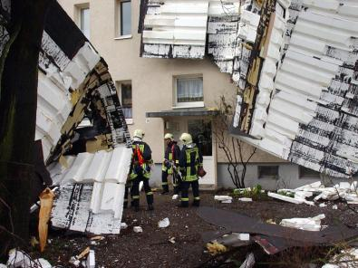
Ein Polystyrol-Flugdach entwickelt bei Sturm auch eine gewisse Reiselust in den Vorgarten.
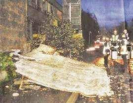
Ein kleiner Sturm mit "91 km/h", das WDVS liegt auf der Straße. Sieht so die Zukunft aller WDVS aus? (Abb.:
"Vom Winde verweht: ein Teil einer Gebäudefassade stürzte auf die
Maybachstraße", Foto: Ulli Kraufmann in: Stuttgarter Nachrichten
20.11.04: "Die Dämmplatten krachten gegen 6.45 Uhr auf den Gehweg
und die Fahrbahn - glücklicherweise ohne jemanden zu verletzen", Scan+Bildbearbeitung
KF)
Unter dem Titel "Sprengstoff bei Dämmstoff"
schreibt Franz Artner im österreichischen Baureport 6/2004 zu den Dämmstoffheimlichkeiten:
"Je dicker der Dämmstoff aufgebracht wird, desto mehr Augenmerk muss auf die Verarbeitung gelegt werden. Bausachverständige wissen davon ein Lied zu
singen, auch wenn sie das eher selten in der Öffentlichkeit tun. Teilnehmern diverser Bauschadensfachseminare sind die Diabilder von sich lösenden Dämmungen
aber bestens bekannt. [...] Gottlosen Gerüchten zufolge vergibt die Bauindustrie viele Arbeiten an billige Subunternehmer, mitunter auch an Maler. [...]."
Wie die dann bei ihrer Spachtelei Verarbeitungsqualität liefern wollen - das weiß wirklich nur der liebe Gott allein.
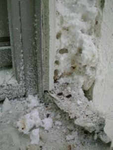
Abbildung: Insektenbefall im WDVS. Nicht nur Spechte brüten bekanntermaßen schaumstoffverwöhnt - auch liebenswertesten Insekten, Maden, Würmern,
Käfern und Ameisen bietet Polystyrol hier heimelig-feuchtwohligen Unterschlupf. Schlaraffenland für Madenfresser oder alles Öko? (Fotografiert von Edmund Bromm,
München, beim Totalabriß des insektenverseuchten "Systems" auf dem Mehrgeschosser. Sein Kommentar: "Bilder aus dem 3 Stock!! Jetzt wird abgerissen. Und der
Dreck ist gut verklebt und nicht zu trennen. Leider gehen auch alle Fenster und Elemente drauf. Diese Leute haben wenigstens viel Arbeit.")
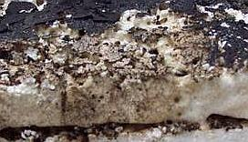
Abbildung: Würmer / Insektenbefall / Fraßschäden im "normalen" Polystyrol XPS unter der Dachhaut!
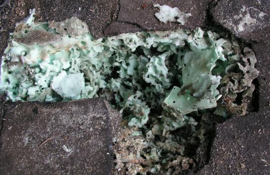
Abbildung: Madenbefall / Insektenbefall auch im expandierten Polystyrol XPS unter der Dachhaut! Was mögen das nur für Viecherlein sein, die einen solchen Fraß reinstopfen. Wunder der Schöpfung!
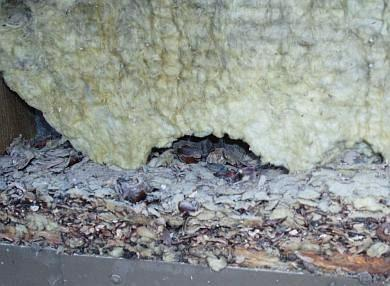
Abbildung: Wir wollen hier keinesfalls einseitig den Dämmschaum verteufeln, deswegen: Nagetierbefall selbstverständlich auch in der durchfeuchteten
und schimmelpilzverseuchten Mineralwolle an der Fassade. Wunder über Wunder? Vielleicht sogar Biber, die doch Feuchtbiotope zum Fressen gerne haben? Oder doch
eher Eichhörnchen? Hamster? Waschbären? Maulwürfe?
Verrückterweise macht im Herbst 2015 eine seltsame Meldung die Runde:
"Forscher Züchten Würmer, die Plastikmüll in Kompost umwandeln".
Da kommt das vorlaute Forscherteam rund um den offenbar nicht nur schlitzäugigen, sondern auch schlitzohrigen Oberschlaumeier Wei-Min Wu aus den Unis Stanford
(Kalifornien) und Beihang (Peking) aber wieder mal sehr zu spät, angesichts des in Deutschland schon lange auffindbaren Wurmbefalls in feuchtwarmen Styroporfassaden. Und ich vermute mal, daß da kein überlegenes Gentechnik-meets-Dämmstoff-Forscherteam der BASF
Ludwigshafen dahintersteckt, sondern der liebe Gott in seiner bewunderungswürdigen Schöpferallmacht seine Hand im Spiel hatte. Zum Nachlesen auf Englisch:
"Science-News" aus Stanford und
"Worms Eating Styrofoam: All You Can Eat"
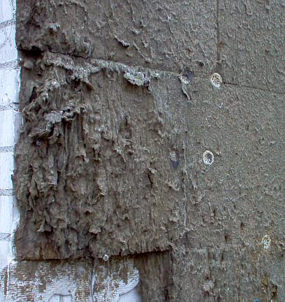
Abbildung: Es müssen aber nicht immer Nagetiere und Wurmparasiten sein, die dem feuchtesaugenden
Dämmstoff den Garaus machen. Ich finde, auch Schimmelbefall bzw. voll abgesoffene Mineralfaserfilze sind nix Feines. Na ja, wenn es der auftraggeber
so bestellt und zum bestimmungsgemäßen Gebrauch beauftragt hat - als höchsteffektiver Schimmelzucht-Nährboden. Wird ja wirklich
immer schwerer, ungeliebte Mieter freizusetzen. So könnt's gehen.
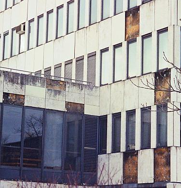
Abbildung: Schimmelfilzeplatten grüßen unter den herabgepurzelten Vorhangfassadenplatten. Modern-dekonstruktivistischer Öko-Baustil im "Green Building"*.
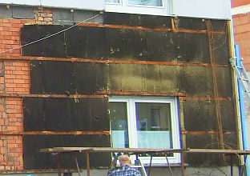
Abbildung:
Vollgeschimmelte Mineralfaserdämmung hinter angegammelter Eternitfassade. Ja, wir erinnern uns alle an die fahrenden
Drückerkolonnen. Und die nächtliche Unterschreitung des Taupunkts geht eben an nicht
wärmespeicherfähigen Leichtbau-Dämmstoffen nicht spurlos vorbei. Deshalb saufen sie sich jede Nacht mit
Kondensat voll. Prosit! Die organische Verkleisterung der Mineralwolle ist natürlich der perfekte Fraß
für Schwarzschimmelpilze. Guten Appetit auch! Der angefressene Bauherr läßt diese Sinfonie in Feucht,
Restgelb und Schwarz gerade abbauen, um ersatzweise ein Polystyrol-WDVS anzubringen. Da darf man schon mal gespannt
sein, was er sich danach ausdenkt. Bildquelle:
Maurermeister und Bausachverständiger Christoph Jaskulski
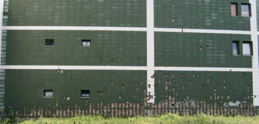
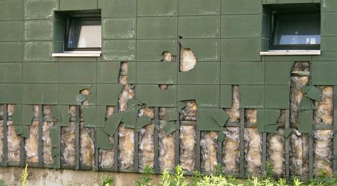
Abbildungen:
Anfang vom Ende einer Wärmedämmung an einem Wohngebäude gegenüber dem Polizeikommissariat Nordstadt (Fotografiert
von Dr. Ulrich Nolte, Frankfurt a. Main) alles inwendig feucht und grau beschimmelt - wie es kondensatsaufende
Fasergespinste und Schäume so sehr lieben.
Hier geht's weiter zu abgesoffenen Dämmstoffen am Flachdach
Mit seltsamen Märchen und Wundern wird begründet, Deutschland
zu verpacken. "Wärmedämmung mit Kunststoff ist Klimaschutz."
wirbt DIE KUNSTSTOFF-INDUSTRIE ganzseitig
in der Presse. Häuser sollen dadurch riesenhafte Energieeinsparungen
haben. Auf schriftliche Anfragen nach Konkretisierung und Namhaftmachung
der Wunderhäuser erfolgt - vornehmstes Schweigen. Gemäß
bester aufklärerischer Tradition wollen Wunder hinterfragt werden. Hier die fraglichen Links:
Das Wunder der globalen Erwärmung
Das Wunder des gefährlichen CO2s
Das Wunder der versiegenden fossilen Energiequellen
Das Wunder des Naturstroms im Solarzeitalter
Eigentlich noch schlimmer, was das inzwischen von einem gigantischen
aufgedeckten Korruptionsfall erschütterte Bauministerium von sich
gibt und seine "administrativen Ressourcen" (neues Tarnwort für heimtückische
Mord- und Totschlagetechnik korrupter Pseudodemokratien) voll gegen den
deutschen Bauherrn einsetzt, wie diesem Artikel der SZ vom 30.10.04 zu entnehmen ist:
"Sanfter Druck vom Gesetzgeber
Bauminister hält an Energieeinsparziel für Gebäude fest. ...
.. Bundesregierung will an [...] Zielen [...]
in Sachen Energieeinsparung im Gebäudebereich [...],
unverändert festhalten. [...] Instrument [...] im
Vordergrund [...] der Energiepass für Gebäude. Für
Neubauten [...] schon mit der neuen Energieeinsparverordnung eingeführt.
2006 macht dann eine „Europäische Richtlinie über
die Gesamtenergieeffizienz von Gebäuden“ ihn auch
für den Bestand zur Pflicht. Damit, so Minister Stolpe, werde eine wichtige
Initialzündung für zusätzliche Einsparbemühungen gegeben.
[...] Wohnungswirtschaft [...] Befürchtungen [...] zu hohen Kostenbelastungen
[...] hält man im Bauministerium nicht für
begründet und will ihnen [...] mit verstärkter Aufklärung begegnen.
Steigende Energiepreise [...] zunehmende Wetterkatastrophen
[...] hohe Arbeitslosigkeit [...] große Herausforderungen. [...] nur wenige
Aufgabenfelder, auf denen man diese Probleme gleichzeitig angehen könne.
Die energetische Modernisierung des Gebäudebestandes
gehöre dazu. [...]
Klaus-W. Körner von der „Energiepass-Initiative Deutschland“ und Präsident des Gesamtverbandes der
deutschen Dämmstoffindustrie zeigt sich überzeugt, dass es gelingen wird, verschiedentlich
noch bestehende Vorurteile und Bedenken auszuräumen und dies bevor
die neue EU-Richtlinie ab 2006 den Energiepass
dann bei jedem Besitzer- und Mieterwechsel einer Immobilie verbindlich macht.
Aufklärung heißt deshalb die Devise. [...]
[...] zwei Möglichkeiten zur Erstellung
einer Energiekennzahl. [...] verbrauchsgestützter Energiepass [...]
misst [...] Energieverbrauch, [...] vom Nutzungsverhalten beeinflusst [...]
[...] der bedarfsgestützte
Energiepass [...] Energiebedarf beschreibt. [...]
Energiemenge, die aufgrund von Gebäudeform, Himmelsrichtung, Bau- und
Anlagentechnik bei normierten, meteorologischen Randbedingungen ermittelt wird. Damit
steht nicht der tatsächliche Verbrauch zur Debatte, der von
Wetter und Nutzer unterschiedlich beeinflusst wird, sondern der Bedarf, der
auf exakten architektonischen wie bau- und anlagetechnischen Kriterien
basiert. H.-K. v. Schönfels"
Das kommentiert sich eigentlich
schon selbst, dennoch: Wie beurteilen wir Bürger die katastrophenangstbedienenden
Ziele unserer Regierung? Eben, exaktemo! Und wenn die Regierung "Aufklärung" heuchelt,
kann etwas anderes herauskommen als noch mehr ges. gesch. ermordete Kinder?
Total unprofessionell aber, ausgerechnet einen Dämmstofffritzen zum
Heuchel-Initiativen-Präsidenten zu machen. Wahrscheinlich
fühlt der Große Bruder sich schon so sicher, daß nicht
einmal sowas noch seiner Sache schaden kann?
Hübsch, wie die
gegen alle fachlichen Einwände immer weiter entwickelten Rechentricks fernab jeglicher wahren
Verbrauchswerte als "exakte Kriterien" hochstilisiert werden. Ist das SZ-Folklore,
wo ein Dr. Illinger auf seiner "Wissenschaftsseite" jedes mal wieder die
Welt dank Menschenmache hoppsgehen läßt, mag die Klimaschwindel sonst
überall noch so sehr als grober Fake entlarvt sein?
Und nur wenige Tage später steigert die SZ am 5.11. ihren mephistophelischen
Trommelwirbel für den Energiepaßschwindel - im allermiesesten
Stil der Volksverhöhnung:
"Neue Gretchenfrage: Wie hälts du´s mit der Energie?
Die Eigentümerverbände laufen Sturm, doch der Gebäudeenergiepass
wird kommen. Und sinnvoll ist er eigentlich auch
Von Miriam Beul
Im Jahr 2006 werden viele Immobilienbesitzer als Straußenvögel
wiedergeboren. [...] Wohnungsbesitzer, die dann keinen ahnungslosen Erben
mit diesen Energie verschwendenden Gebäuden beglücken können
oder keinen Dummen finden, der jetzt kauft, stecken ihre Köpfe womöglich lieber in den Sand."
Kommentar: Da spürt man fast die Lust der
Autorin, diesen arg bösen Eigendümmern vielleicht feste nachzuhelfen, oder wat?
"Denn es gibt kein Zurück. Die Bundesregierung ist
gezwungen, eine amtliche EU-Richtlinie in deutsches Recht umzusetzen."
Kommentar: Als ob das einer
glauben könnte! Und wir nicht alle befürchteten, daß mit allerlei
Beschißmechanismen und dicken Kuverts die deutschen Ökoprofiteure die EU
vielleicht dafür "gewonnen" haben, "unsere" erbärmlich arme, kleine und
schwächliche Bundesregierung für manche sehr segensreich zu "zwingen". Grein, heul, jammer!
"Es geht dabei um Verbraucherschutz, Umweltziele, Arbeitsplätze
und viel Geld: Um die Erderwärmung zu verlangsamen, müssen auch
die Deutschen ihren Kohlendioxidausstoß reduzieren (Umweltziel).
Dies gelingt nur, wenn die Energieeffizienz von Wohngebäuden verbessert
wird (Arbeitsplätze durch Auftragsschwemme für das Handwerk &
viel Geld), die noch vor der Großindustrie die schlimmsten CO2-Produzenten sind."
Das weitere Gesülze - sogar der dena-(Ver-)Kohler
wird bemüht -sparen wir uns aus Energie- und Zeitspargründen.
Bis auf folgenden witzigen Nachsatz, in dem das Artikelchen
mündet (Hej Miriam, gehörst Du doch zu uns, und lieferst hier nur ein flottes Marketing-Auftragstextchen ab?):
" "Man muss auch diesen Prozess in seiner ganzen Komplexität
betrachten", weist Martin Köller, Geschäftsführer des Internationalen
Instituts für Facility Management GmbH in Oberhausen hin. "Die Banken
erkennen Investitionen in den verminderten Energieverbrauch von Immobilien
(noch) nicht als lohnende Zukunftsausgabe an" sagt er."
Ganz schön dumm, daß Banken (noch) nicht alle
spitzen Bleistifte gegen Computersimulationen ausgetauscht haben und
lieber Bilanzen als SZ lesen.
Das sind die Medien, die wir Spaßgesellschaftler
uns wünschen! Und wer wird wohl die restliche Korruption im Bau und
den restlichen Ministerien aufdecken? Zeit wärs ja.
Bleibt das Wunder der energiesparenden Dämmung. Hyperintelligente
diplomierte, dissertationierte und habilitierte Rechenkünstler, Maschinenbauer
und -bäuerinnen, Physiker, Elektroniker, Bauingenieure, sogar
Lehrstuhlinhaber, Bautechniker und Handwerksmeister sondern softwaregestützt
brillantes Formelgewirr ab, wonach schaumgespinstigste Leichtbaustoffe den
Abfluß von Heizwärme blockieren können und damit irre Energie sparen.
"Wärmeschutz aus Kunststoff ist ein optimales Mittel, um im
Haushalt Kosten zu sparen. ... Wer sein Haus oder seine Wohnung gut mit
Kunststoffen dämmt, kann den Heizenergieverbrauch und damit die Kosten
drastisch senken." - so DIE KUNSTSTOFF-INDUSTRIE.
Jedoch - ist diese Reklameaussage auch wirklich wahr? Es ist ja nichts
so fein ersonnen, die Wahrheit bringt es an die Sonnen. Das ist das Thema dieser Seite.
Und eines muß man als historisch bewanderter Bauspezl
wissen: Erst als nach dem Krieg von der Warmmiete zur Kaltmiete übergegangen
wurde, haben die Vermieter begonnen, Leichtbaumist im Wohnungsbau zu errichten.
Da war es nämlich plötzlich egal, wieviel Kröten der Mieter
verheizt. Hier liegt also der Hund begraben, der dann so bissig wurde.
Und was die feinen architektenersparenden Fertighäusli betrifft, aus Pappe und Dämmstöffli:
Vorsicht! Die Wändli sind gerne voller
Wasserfallenfolien und Schimmelpilzli und Ursache gräuslichster Gesundheitsstörungen
(neudeutsch für Kotz verreck). Vor dem Erwerb also immer auf Schadstoffgehalt
überprüfli! Inzwischen wacht sogar DER SPIEGEL auf, Redakteur Sebastian
Knauer schreibt am 26.3.05 auf Seite 21:
"KLIMASCHUTZ
Algen am Haus
... Nach Berechnungen von Bausachverständigen für das
Hamburger Architektur Centrum bringe die "Extremdämmung" der
Außenwände ... teilweise nur ein knappes Zehntel der rechnerischen Einsparungen.
... Auf der "angepappten Außenhaut" und den aufgebrachten
Dämmputzen bildeten sich zudem leichter Flechten und Algen, die das
Gebäude "unattraktiv und ungepflegt" aussehen ließen. ...
Wärmedämmungen ... (stellen einen) "groben Eingriff" in die Fassaden (dar) ..."
Der zugrundeliegende Originalbeitrag von Kollege Dipl.-Ing. Gerhard
Bolten, ö.b.u.v. Sachverständiger, Hamburg: www.architektur-centrum.de/archiv/archiv_2005_WärmedämmfassadenBolten.pdf
und hier auf dieser Seite in htm.
* Der Begriff "Green Building" leitet sich ab von dem 1998 gegründeten World Green Building Council (GBC), dem
mehrere Länder beigetreten sind. Jedes Land hat ein nationales Bewertungssystem für das damit propagierte
"umweltgerechte" bzw. "nachhaltige" Bauen herausgebracht, z.B. die USA das "Leadership in Energy & Environmental Design
LEED", das als Zertifikats-Label für sog. "Sustainable Design" genutzt wird. In Deutschland möchte die 2007
gegründete "Deutsche Gesellschaft für nachhaltiges Bauen e.V. DGNB" ein eigenes Gütesiegel nach eigenem
Zertifizierungssystem auf dem Markt verankern. Inwieweit die dabei vertretenen Bausysteme und grünen Ideologien
wirklich der Umwelt oder eher der Vermarktung fragwürdiger Bauweisen nutzen, könnte zumindest außerhalb
der "Beteiligten" diskutiert werden ...
Weiter: Der Schwindel mit der Wärmedämmung - Kapitel 2
Angebliche und wirkliche Fachliteratur der Dämmpropaganda und ihrer entschiedensten Gegener sowie mehr oder
weniger nützliche Produkte rund ums Energiesparen, den Schimmelpilz und die Feuchteproblematik - Sie entscheiden!
Altbau und Denkmalpflege Informationen Startseite
Energiesparseite
Noch Fragen?
© Konrad Fischer